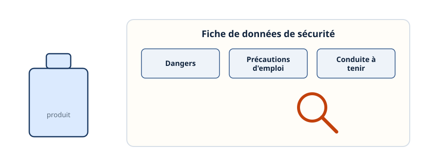
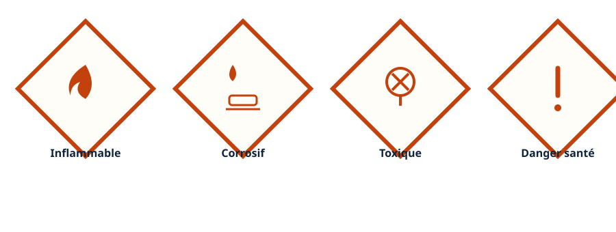
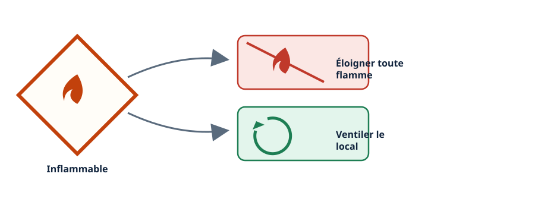
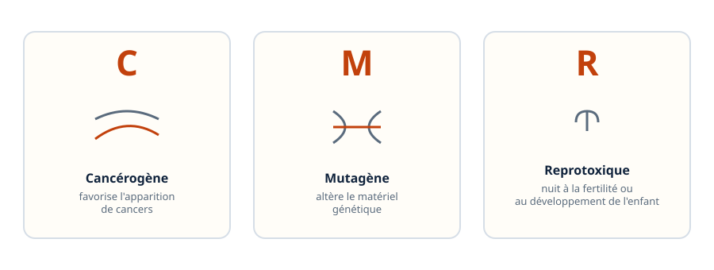
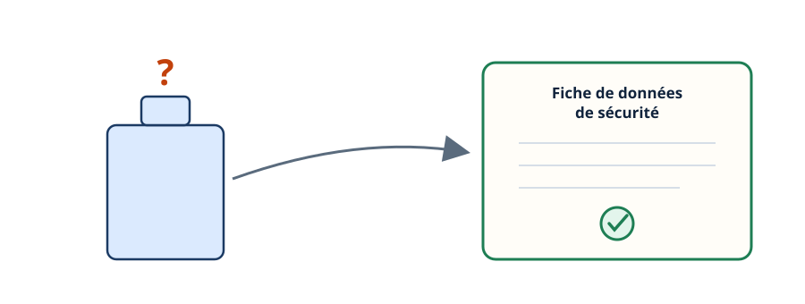
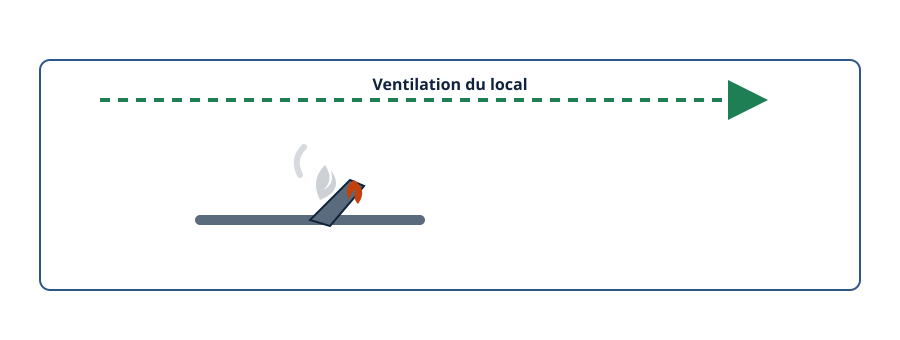
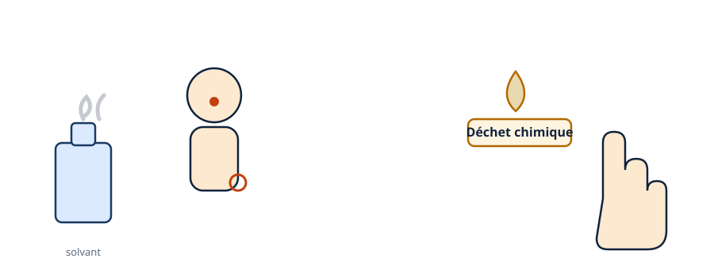
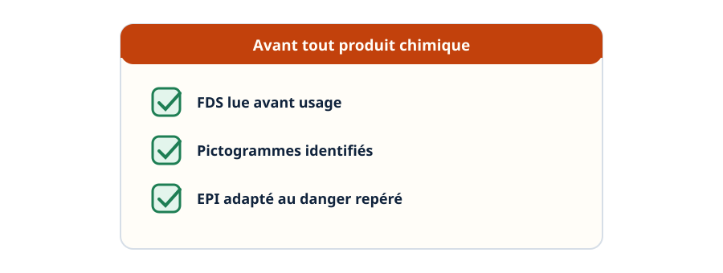

Risque chimique — lire la fiche avant d'ouvrir le bidon
Mini-station commentée · 8 écrans et 4 questions · environ 10 minutes
Objectif
À la fin de la station, vous savez lire une fiche de données de sécurité, reconnaître ce que change un pictogramme de danger, dire ce que signifie qu'un produit est classé CMR, et situer ces risques dans les gestes du métier : brasage, nettoyage au solvant, huile récupérée.
Chaque écran peut être expliqué à voix haute : le bouton « Écouter » commente ce que vous voyez. Rien n'est dit qui ne soit aussi écrit.
1 / 12
Écran 1 sur 8
La fiche de données de sécurité (FDS)
Pour tout produit chimique, le fournisseur doit remettre une fiche de données de sécurité : elle décrit les dangers du produit, les précautions d'emploi, et la conduite à tenir en cas d'exposition.
Le réflexe : la consulter avant d'utiliser un produit qu'on ne connaît pas, et savoir où elle est rangée sur le site.

La fiche se lit avant d'ouvrir le bidon, pas après.
Écran 2 sur 8
Le losange, un danger
Les dangers d'un produit chimique sont signalés par des pictogrammes en forme de losange. Chaque losange porte une silhouette simple qui désigne une famille de danger : inflammable, corrosif, toxique, dangereux pour la santé — il en existe d'autres, comme le danger pour l'environnement ou le gaz sous pression.

Un losange, une famille de danger.
Écran 3 sur 8
Un pictogramme change le geste
Un pictogramme n'est pas décoratif : il commande un geste précis. Face à un produit inflammable, le réflexe est d'éloigner toute flamme ou source d'inflammation, et de ventiler le local où il est utilisé.

Voir le pictogramme, c'est savoir quel geste adopter.
Écran 4 sur 8
Les substances CMR
Un produit peut être classé CMR :
Cancérogène — favorise l'apparition de cancers ;
Mutagène — altère le matériel génétique ;
Reprotoxique — nuit à la fertilité ou au développement de l'enfant.
Certains solvants de nettoyage ou certains flux de brasage peuvent être concernés : c'est la FDS qui le dit, pas la mémoire.

Trois lettres, trois dangers distincts.
Écran 5 sur 8
Le réflexe : la FDS le dit, pas la mémoire
« Je crois que ce produit n'est pas dangereux » n'est jamais une réponse suffisante. La classification exacte d'un produit — CMR ou non, quels pictogrammes — se lit sur sa fiche de données de sécurité, pas dans le souvenir qu'on en a.

La classification se lit, elle ne se devine pas.
Écran 6 sur 8
Le brasage en local technique dégage des fumées
Un brasage chauffe le métal et le flux utilisé : cette combinaison dégage des fumées qui imposent une ventilation du local, surtout dans un espace fermé.

Le flux et le métal chauffé dégagent des fumées à évacuer.
Écran 7 sur 8
Solvant de nettoyage et huile récupérée
Un nettoyage de circuit au solvant expose la peau et les voies respiratoires. L'huile frigorigène récupérée, elle, est un déchet chimique : elle ne se manipule pas à mains nues de façon prolongée.

Deux produits du quotidien, deux précautions différentes.
Écran 8 sur 8
Bilan et le réflexe
La FDS décrit les dangers, les précautions, la conduite à tenir.
Un pictogramme commande un geste précis, il n'est pas décoratif.
Un produit CMR peut être cancérogène, mutagène ou reprotoxique.
Le brasage, les solvants et l'huile récupérée sont des risques chimiques ordinaires du métier.
La classification d'un produit se lit sur la FDS, elle ne se devine pas.
Le réflexe : lire la FDS avant d'ouvrir le bidon, pas après un incident.

Trois vérifications avant tout produit chimique.
Question 1 sur 4
Avant d'utiliser un produit chimique inconnu, quel est le réflexe ?
Rappel de l'écran 1 — la FDS se lit avant l'usage.
Question 2 sur 4
Un pictogramme de danger sur un bidon sert à…
Rappel de l'écran 3 — un pictogramme commande un geste.
Question 3 sur 4
Que signifie qu'un produit est classé CMR ?
Rappel de l'écran 4 — trois lettres, trois dangers.
Question 4 sur 4
Pourquoi un brasage en local technique doit-il être ventilé ?
Rappel de l'écran 6 — le flux et le métal chauffé dégagent des fumées.
Les correspondances de la station
L'habilitation (sous-ligne Électrique) — la règle d'un côté, le geste protégé de l'autre.
Cette station est en préparation sur le plan du réseau.